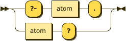
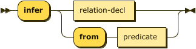

DATALOG-TEXT: Datalog Text Representation
Version: 1.0, 2 April 2022 (Draft)
Editor: Simon K. Johnston <johnstonskj@gmail.com>
Please check the § Errata for any errors or issues reported since publication.
The English version of this specification is the only normative version. Non-normative § Translations may also be available.
Abstract
This document defines a standard textual representation of a Datalog program. This representation is based upon commonly used representations for programs and adds processing instructions and explicit Unicode support. The term DATALOG-TEXT SHALL BE used to reference this specification within this document and others that reference it.
Status of This Document
This section describes the status of this document at the time of its publication. Other documents may supersede this document.
Introduction
This section is non-normative.
Datalog is a logic programming language and a subset of the earlier Prolog1. The language is interesting as it can be used as a data query language akin to SQL with some important additional capabilities such as recursive queries. It is also expressive enough to allow for its use as an entailment mechanism for ontology languages such as the Web Ontology Language (OWL)2 and the Semantic Web.
The specific language that may be represented by the DATALOG-TEXT grammar includes typed attributes and functional dependencies for relations, negated and arithmetic literals, disjunction in rule heads, and constraint rules. With the exception of required support for typed attributes the other language features are opt-in using pragmas.
How to Read This Document
This section is non-normative.
This document is a detailed specification for DATALOG-TEXT, a representation in textual form, of a Datalog program. The document is primarily intended for the following audiences:
- Software developers who want to generate or consume Datalog programs, in the DATALOG-TEXT representation.
- Software developers who want to convert existing Datalog serializations to DATALOG-TEXT.
- Software developers who want to implement processors and APIs for DATALOG-TEXT.
- Software developers who want to understand the design decisions and language syntax for DATALOG-TEXT.
Contributing
This section is non-normative.
The content for this site is generated from a GitHub repository. Discussions, comments, and errata are hosted on the specification GitHub repository’s discussion section.
Terminology
This section is non-normative.
- Media Type – This specification describes an Internet Media Type RFC1590 that is used “in order to provide open and extensible data typing and type negotiation” – from RFC2616, section 3.7.
- Program – A complete Datalog entity that may be serialized into a resource in a particular representation or media type.
- Representation – “An entity included with a response that is subject to content negotiation, as described in section […]. There may exist multiple representations associated with a particular response status.” – from RFC2616, section 1.3.
- Resource – “A network data object or service that can be identified by a URI, as defined in section […]. Resources may be available in multiple representations (e.g. multiple languages, data formats, size, and resolutions) or vary in other ways.” – from RFC2616, section 1.3.
- Dataset – An external resource that holds a representation of a Datalog resource.
Using these terms this specification describes a particular representation of a Datalog program, whose type is identified by a unique media type, that may be serialized into a resource for storage or transfer.

- Application – This denotes some software component that requires the ability to download, read, and act upon Datalog resources. To accomplish this the application has to interact with the processor.
- Processor – A software component that provides at least the parser and resolver and commonly the evaluator as well.
- Parser – The subcomponent that actually parses the resource, validating syntax and well-formedness rules (see § Grammar for the details of the DATALOG-TEXT language grammar).
- Resolver – The subcomponent that has to resolve and make available any referenced dataset resources (see § Resolvers for details of the resolver).
- Evaluator – The subcomponent that consumes the parsed program and entails intensional facts from rules.
Using these terms this specification describes the requirements of the parser to correctly produce some representation of the program provided to it, and also the resolver requirements for retrieving external resources.
Datalog Naming Convention
When we talk specifically about the Datalog language it is common to represent it in a roman serif face as $\small\text{Datalog}$. This allows the distinction of talking in general about Datalog in the abstract vs. the actual semantics of the language $\small\text{Datalog}$.
This core $\small\text{Datalog}$ language has many documented extensions that provide additional flexibility, conciseness, or expressiveness. These languages, sub-languages, extensions, or dialects are usually labeled by adding a superscript symbol that identifies the specific extension. For example, $\small\text{Datalog}^{\lnot}$ is the language extended with negation of literals, $\small\text{Datalog}^{\Gamma}$ is the language extended with type checking on attributes, and $\small\text{Datalog}^{\lnot,\theta}$ is the language extended with negation of literals and arithmetic literals. The order of superscript symbols is irrelevant.
| Language | Introduces | Symbols |
|---|---|---|
| $\small\text{Datalog}^{\lnot}$ | negation of literals in rule bodies | !, NOT, ￢ |
| $\small\text{Datalog}^{\lor}$ | disjunction in rule heads | ;, OR, ∨ |
| $\small\text{Datalog}^{\Leftarrow}$ | rules as constraints, i.e. no body | N/A |
| $\small\text{Datalog}^{\Gamma}$ | typed attributes for relations | N/A |
| $\small\text{Datalog}^{\theta}$ | arithmetic literals in rule bodies | =, !=, ≠, <, <=, ≤, >, >=, ≥, *=, ≛` |
| $\small\text{Datalog}^{\rightarrow}$ | functional dependency processing instruction | -->, ⟶ |
When referring to the specifics of the language we will use the common format $\small\text{Datalog}$ with superscripts as necessary to identify specific language extensions being used. Note that the default language described by DATALOG-TEXT with no enabled language features is in fact $\small\text{Datalog}^{\Gamma}$ and not $\small\text{Datalog}$.
Chapter 1 of CeGoTa90 provides a good overview of the drawbacks of Prolog and the advantages of Datalog for certain tasks.
Conformance
As well as sections marked as non-normative, all authoring guidelines, diagrams, examples, and notes in this specification are non-normative. Everything else in this specification is normative.
The keywords MAY, MUST, MUST NOT, RECOMMENDED, SHOULD, and SHOULD NOT in this document are to be interpreted as described in BCP 14 RFC2119 RFC8174 when, and only when, they appear in all capitals, as shown here.
A conforming DATALOG-TEXT resource is a Unicode string that MUST conform to the grammar and additional constraints defined in § Datalog Text Grammar, starting with the program production.
A conforming DATALOG-TEXT parser MUST ensure the resource it is provided is a conforming DATALOG-TEXT resource, signalling error conditions specified herein. Additionally, a conforming resolver MUST be able to convert paths to URIs RFC3986 and retrieve the identified resource on behalf of the parser.
Strict vs Lax Processing
Two modes of operation for a conforming DATALOG-TEXT processor are described, a strict processing mode that, while more verbose, relies less on inference of a program’s semantics. For example, when strict processing is enabled all relations both extensional and intensional MUST BE declared by processing instructions. A lax processing mode allows more flexibility in the source and is especially useful in dealing with Datalog written in different dialects.
Strict processing support is RECOMMENDED, and may be enabled by the strict pragma. Where behavior is required by strict processing it will be highlighted in the text. This specification does not define whether a conforming DATALOG-TEXT processor is required to be strict by default.
Media Type and Content Encoding
The media type of DATALOG-TEXT resource is application/vnd.datalog. The content encoding of a DATALOG-TEXT document is always UTF-8. For complete details, see appendix § IANA Considerations.
features Parameter
This parameter is used to indicate the language features the resource requires. The list of supported feature identifiers is in § Language Features.
The content of this parameter is a comma separated list of feature identifiers. This is used as a hint to a conforming DATALOG-TEXT processor to determine if they can process the resource.
While it is clearly of benefit for the set of features listed in this parameter to be exactly the same as the set of language pragmas used in the document it is impossible to guarantee. Therefore, processors MAY choose to proceed parsing the resource or signal an error if they find that these feature lists do not match.
Errors
ERR_UNSUPPORTED_FEATURE– a feature identifier was not recognized, or supported, by the processor, even if it may be valid in some other version of this specification.
Example
The media type application/vnd.datalog;features=negation,constraints denotes a document with the following feature pragmas.
.pragma negation.
.pragma constraints.
dialect Parameter
This parameter is used to indicate the language dialect the resource conforms to. The list of supported dialect identifiers is in § Dialect Identifiers.
The content of this parameter is a single dialect identifier.
Errors
ERR_UNSUPPORTED_DIALECT– a dialog identifier was not recognized, or supported, by the processor, even if it may be valid in some other version of this specification.
Language Features
As mentioned in the introduction the language described by DATALOG-TEXT with no additional language features enabled is $\small\text{Datalog}^{\Gamma}$, the language $\small\text{Datalog}$ with typed relation attributes. All the language features defined in this specification MUST BE supported by a conforming DATALOG-TEXT processor. These features are: arithmetic_literals, constraints, disjunction, extended_numerics, functional_dependencies, and negation.
| Identifier | Source | Date |
|---|---|---|
arithmetic_literals | This specification | XX March 2022 |
constraints | This specification | XX March 2022 |
disjunction | This specification | XX March 2022 |
extended_numerics | This specification | XX March 2022 |
negation | This specification | XX March 2022 |
This specification DOES NOT cover the behavior of a DATALOG-TEXT evaluator and
so support of these language features only ensures that a DATALOG-TEXT
resource can be parsed and validated, not that it can be evaluated. In the
case that an evaluator detects a language feature it cannot support it MUST
signal the error ERR_UNSUPPORTED_FEATURE.
Dialect Identifiers
The purpose of this parameter is to allow for the identification of Datalog representations that are produced by applications that are not DATALOG-TEXT conformant. These applications may use an alternate syntax for grammar specified by DATALOG-TEXT, or they may extend the language with non-standard features.
| Identifier | Source | Date |
|---|---|---|
core (default) | This specification | XX March 2022 |
mitre | MITRE Datalog implementation | 01 June 2016 (v2.6) |
MITRE Datalog
This dialect only allows ASCII, Prolog style, operators; :- for material
implication, , for conjunction, and ! for negation. The dialect does not
support the features constraints, disjunction, or extended_numerics.
The use of other syntaxed defined in this specification MUST signal the error
ERR_UNSUPPORTED_SYNTAX.
Example
Note that the absence of the dialect parameter on the MIME type is the same
as using the value core. The following values are therefore equivalent.
application/vnd.datalog
application/vnd.datalog;dialect=core
Basic Concepts
This section is non-normative.
The following graph is an informal representation of the DATALOG-TEXT grammar. It represents_leaf values_ (constants, variables, …) in rectangles and composite values as ellipses. Additionally, where a composite is defined as $\small A \oplus B$ a small filled diamond shape represents the exclusive or relationship. Finally, some edges in the graph are labeled with “*”, “+”, and “?” which are the common cardinality notation used in regular expressions and BNF notation.

Notes
- The edge between rule and head has the label “
?/*” as it has differing cardinality under $\small\text{Datalog}$, $\small\text{Datalog}^{\lor}$, and $\small\text{Datalog}^{\Leftarrow}$. - The edge between literal and negated? is labeled as “
?” as it is necessary under $\small\text{Datalog}^{\lnot}$ but not under $\small\text{Datalog}$. - The edge from the choice between literal and comparison is labeled as “
?” as it is necessary under $\small\text{Datalog}^{\theta}$ but not under $\small\text{Datalog}$. - The three dashed lines represent the following constraints.
- Between rule and relation to represent the fact that intensional relations are inferred from rule evaluation.
- Between relation and predicate to represent the fact that the predicate for a relation may be derived from the predicate of the atoms within it (or vice versa).
- Between head and body to represent the fact that while both are optional for a rule, one or other must be present.
Brief Summary of Concepts
This section is non-normative.
Program
A $\small\text{Datalog}$ program $\small P$ is a tuple comprising the extensional database, EDB, or $\small D_{E}$, the intensional database, IDB, or $\small D_{I}$, and a set of queries $\small Q$.
$$\small P=(D_{E}, D_{I}, Q)$$
The extensional database is a set of (extensional-) relations.
The intensional database is a set of rules, $\small\Lambda$, for constructing additional (intensional-) relations.
Relations $\small R$ and rules $\small\lambda$ are built from a language $\small \mathcal{L}$,
$$\small \mathcal{L}=( \mathcal{C},\mathcal{P},\mathcal{V},\Gamma)$$
- $\small \mathcal{C}$ – the finite sets of symbols for all constant values; e.g.
hello,"hi",123, - $\small \mathcal{P}$ – predicates, the finite set of alphanumeric character strings that begin with a
lowercase character; e.g.
human,size,a, - $\small \mathcal{V}$ – variables, the finite set of alphanumeric character strings that begin with an
uppercase character; e.g.
X,A,Var. - $\small \Gamma$ – a finite set of data types – introduced by the language $\small\text{Datalog}^{\Gamma}$.
Relations
A relation is a tuple comprising a unique label $\small \mathcal{p}$, a schema $\small S$, and a set of facts $\small F$.
$$R = (\mathcal{p}, S, F)$$
Relation labels are predicates $\mathcal{p}\in\mathcal{P}$.
Schema
A relation’s schema $\small S$ is a tuple that describes the attributes $\small(\alpha_1,\ldots,\alpha_j)$ that make up the relation. Each attribute is a tuple of type and optional label, $\small\alpha_i=(\gamma_i, \mathcal{p}_i^?)$ where attribute types are taken from a set of types $\small\Gamma$ such that $\small\gamma_i\in\Gamma$ and $\small \mathcal{p}_i^?\in\mathcal{P}$.
$$\small S = (\alpha_1,\ldots,\small \small \alpha_j)$$
$$\small \alpha = (\gamma, \mathcal{p}^?)$$
$$\small \forall \alpha \in S(\gamma_{\alpha}\in\Gamma \land \mathcal{p}^?_{\alpha}\in\mathcal{P})$$
A relation’s schema in $\small\text{Datalog}^{\rightarrow}$ is extended to support functional dependencies.
$$\small S = ((\alpha_1,\ldots, \alpha_j), \lbrace \varphi_1, \ldots, \varphi_k\rbrace )$$
Types
Commonly Datalog supports the simple types boolean $\small\mathbb{B}$, integers $\small\mathbb{Z}$, and symbols $\small\mathcal{K}$. General character strings may also be added, $\small\mathcal{S}$.
$$\small\Gamma = \lbrace \mathbb{B}, \mathbb{Z}, \mathcal{K}, \mathcal{S} \rbrace$$
All constant values have a type in the types for the current language.
$$\small\gamma(c) \in \Gamma$$
Facts
A fact is an atom where all terms are constant values $\small t \in \mathcal{C}$, not variables.
$$\small \forall t \in A (t \in \mathcal{C})$$
Atoms
An atom is a predicate-labeled tuple of label and terms. The atom’s label $\small\mathcal{p}\in\mathcal{P}$ identifies the relation to which it belongs.
$$\small A=(\mathcal{p},(t_1,\ldots,t_j))$$
Each term $\small t_i$ MUST conform to the relation’s schema attribute $\small \alpha_i$.
$$\small\forall i \in [1,j] (\Gamma \vdash \gamma(t_i) : \gamma_{\alpha_i})$$
Terms
A term is either a constant value $\small c\in\mathcal{C}$, or a variable $\small v\in\mathcal{V}$.
$$\small \forall t \in A (t \in \mathcal{C} \lor t \in \mathcal{V})$$
Rules
A rule takes the form IF antecedence THEN consequence where the consequence is the head of the rule before the material implication symbol and the antecedence is the body of the rule after the material implication symbol.
The consequence, or head, of the rule $\small\lambda\in\Lambda$ is the disjunction of atoms $\small A_1 \ldots, A_m \subseteq D_I$ and the antecedence, or body, of the rule is the conjunction of literals $\small L_1, \ldots, L_n$.
$$\lambda=\small A_1, \lor \ldots, \lor A_m \leftarrow L_1, \land \ldots, \land L_n$$
- In $\small\text{Datalog}$ only a single atom MUST be present in the head; $\small m=1$.
- In $\small\text{Datalog}^{\lor}$ one or more atoms MAY be present in the head; $\small m \geq 1$.
- In $\small\text{Datalog}^{\Leftarrow}$ a single atom MAY or MAY NOT be present in the head; $\small m \leq 1$.
Literals
A literal is either relation or arithmetic, $\small L^{\theta}$ and may be negated. Relational literals are simply an atom:
$$\small L=A \in D_E \cup D_I$$
Negated Literals
Negated literals are present only in $\small\text{Datalog}^{\lnot}$.
A literal may be positive $\small L$ or negative $\small \lnot L$.
$$L^{\prime} = L \oplus \lnot L$$
Arithmetic Literals
Arithmetic literals are present only in $\small\text{Datalog}^{\theta}$.
An arithmetic literal takes the form of a tuple where $\small t_{lhs}$ and $\small t_{rhs}$ are terms and $\small\theta$ is a binary comparison operation (equal, less-than, etc.).
$$\small L^{\theta} = (t_{lhs}, \theta, t_{rhs})$$
$$\small L^{\theta^{\prime}} = L^{\theta} \oplus \lnot L^{\theta}$$
Queries
A query $\small q \in Q$ is an atom which acts as a goal and returns any facts that match its terms.
$$\small q=A \in D_E \cup D_I$$
Functional Dependencies
Functional dependencies are present only in $\small\text{Datalog}^{\rightarrow}$.
A functional dependency, $\small\varphi$, is a uniqueness constraint for a relation of the form $\small R: \alpha \longrightarrow \beta$ with the set $\small\alpha$ or determinant and the set $\small\beta$ or dependent of attributes where the attributes exist in the relation and the two sets are not equal.
$$\small\varphi = (R, \alpha, \beta)$$
$$\small \alpha, \beta \subseteq S_R \land \alpha\neq\beta$$
This relationship denotes that for the relation $\small R$, every valid combination of determinant values uniquely determines the value of the dependent values.
Datalog Text Grammar
A DATALOG-TEXT resource is a UnicodeUNICODE character string encoded in UTF-8. Unicode code points only in the range U+0 to U+10FFFF inclusive are allowed.
White space (Unicode category Zs, tab U+0009 and EOL) is used to separate two terminals which would otherwise be (mis-)recognized as one terminal. White space is significant in the production literal-string (see § Types & Constants).
Comments in a DATALOG-TEXT resource takes either of the following forms. Comments are treated as white space.
- Begin with a
%and continue to the end of line (EOL) or end of file if there is no end of line after the comment marker. - Begin with the characters
/*and end with the characters*/. They may occur anywhere outside other tokens, and their contents have no influence on the rendering. Comments MAY NOT be nested.
The EBNF used here is defined in XML 1.0 EBNF-NOTATION with the addition that each rule in the grammar ends with a semicolon character ;. The amended rule for symbol is shown below.
symbol ::= expression ";"
The following are the detailed sections of the grammar.
- Program
- Relations & Facts
- Types & Constants
- Rules
- Atoms & Terms
- Literals
- Queries
- Processing Instructions
- Comments
- Terminal/Lexical
Program
A Datalog program consists of a set of facts that comprise the extensional database, a list of rules that are used to infer relations in the intensional database, and possibly a set of queries to interrogate the result of any reasoning performed over the program.
To be able to facilitate interchange a DATALOG-TEXT resource also includes processing instructions that provide the parser and resolver information on how to interpret the contents of the resource1.

program ::= processing-instruction* ( fact | rule | query )* ;
A program consists of a single file containing facts, rules, and queries as well as any additional files referenced via § Processing Instructions.
Example
The following program is an encoding of the classical syllogism “all men are mortal, Socrates is a man, therefore Socrates is mortal” Mill1851.
1: .assert human(string).
2: .infer mortal from human.
3:
4: human(socrates).
5:
6: mortal(X) :- human(X).
7:
8: ?- mortal(socrates).
- Lines 1-2 define two relations, an extensional relation named human and an intensional relation named mortal. Each relation schema comprises a single, unlabeled, string attribute.
- Line 4 makes the assertion that Socrates is human.
- Line 6 is the rule that any human is also therefore mortal.
- Line 8 is a query that effectively asks is there a fact in the mortal relation where the attribute is “socrates”?.
The outcome of this will be of the form:
+------------+
| _: boolean |
+============+
| true |
+------------+
Syntax diagrams are generated by bottlecaps.de.
Relations & Facts
While relations are a key aspect of the Datalog language there is no actual production for relation in the syntax. This is because the syntax instead expects a set of facts expressed and where those facts share the same label, and are schema compatible they comprise a relation. Each relation has a schema that defines the number of attributes, their types, and optionally their labels. The number of attributes is often termed the arity of the relation or of a fact.
In some literature, where Datalog is analyzed from a model theoretic view, the term sort is more often used than schema. In either case the meaning is equivalent. See Wilfred97 and AbHuVi94.
Facts may be either asserted (added to a relation), or retracted (removed from a relation).

fact ::= assertion | retraction ;
Assertion is denoted by a fact body followed by the perion, '.' character.
assertion
::= fact-body "." ;
Retraction is denoted by a fact body followed by the tilde, '~' character.
As a relation is a set of facts, each fact is syntactically unique and
addition and removal are based on the equality relation for each constant type.
retraction
::= fact-body "~" ;
Retraction of a fact which is not a member of the relation MUST NOT be treated as an error, although it MAY BE handled with a warning or informational message.
The body of a fact is expressed in the form of ground
§ Atoms where all
§ Terms are constant, and so they have a
specific production rather than a constrained form of the atom rule. A
predicate is the identifying label shared by a relation and its facts.
fact-body
::= predicate ( "(" constant ( "," constant )* ")" )? ;
A predicate is a string of characters that MUST start with a character from the Unicode category Ll.

predicate
::= LC_ALPHA ( ALPHA | DIGIT | UNDERSCORE )* ;
Errors
Attempting to add a fact that is schema incompatible with an explicitly
declared extensional relation MUST signal the error ERR_INCONSISTENT_FACT_SCHEMA.
.assert human(string).
human(22).
%% ==> ERR_INCONSISTENT_FACT_SCHEMA
It is an error to add a fact that is schema incompatible with an implicitly inferred extensional relation. In this case the first occurrence of human had a string value and so a relation was inferred with a single string attribute.
human(socrates).
human(22).
%% ==> ERR_INCONSISTENT_FACT_SCHEMA
Some cases may not be so obvious, especially with numerics. The value 22 is inferred to be integer, the value 22.0 is inferred to be a decimal, and the value 22.0e2 is inferred to be a float. Therefore, the example below causes an error.
human(22). % integer
human(22.0). % decimal
human(22.0e+2). % float
%% ==> ERR_INCONSISTENT_FACT_SCHEMA
It is also an error to assert facts where the label identifies an intensional, rather than extensional relation.
.assert human(string).
.infer mortal from human.
mortal(22).
%% ==> ERR_PREDICATE_NOT_AN_EXTENSIONAL_RELATION
In this final example the error is caused by processing in strict mode where all relations MUST be declared via processing instructions before use.
.pragma strict.
human(socrates).
%% ==> ERR_PREDICATE_NOT_AN_EXTENSIONAL_RELATION
Examples
The following demonstrates a simple fact denoting that the constant brooke representing some
individual is the parent of some individual represented by the constant "Xerces".
parent("Xerces", brooke).
In a graph program an edge can be represented as an edge with a source vertex, target vertex, and weight.
edge(src, tgt, 100).
Types & Constants
Constants are supported in three types, String, Numbers, and Boolean. Whereas some definitions of
Datalog introduce an additional Identifier type, ASDI treats these as short strings that can
safely be expressed without quotes; therefore, the values xerces and "xerces" are equivalent.

constant
::= string | number | boolean ;
Strings
Strings are described in both the identifier and quoted form in the string rule.
Strings MUST NOT contain characters from the Unicode category Cc (Control) except #x09 tab, #x0A line feed, and #x0D carriage return.
Additionally, strings MUST NOT contain characters from the Unicode categories Cf (format), Co (Private Use), or Cs (Surrogate).
These characters and any other non-printable characters MUST be included using the escape format: \", \t, \n, \r, \u{XXXX}, or \u{XXXXXXXX}.

string ::= identifier-string | literal-string ;
An identifier-string is a string of characters that looks much like a predicate hello, or a namespaced predicate message:hello. This allows for simple string values to be specified without quoting, and a syntax that is closer to the original Prolog form. The introduction of the “:” and trailing string part is an addition in DATALOG-TEXT that allows for larger programs to naturally introduce namespaces for symbols.
In some Datalog literature and implementations there is a
symboltype with a similar grammar production topredicate. In some implementations a symbol type is supported, but it’s value is the string representation of the predicate. This can lead to API confusion here a symbol can be created but is manipulated as a string.
identifier-string
::= predicate ( ":" ALPHA ( ALPHA | DIGIT | UNDERSCORE )* )? ;
Literal strings are enclosed in double quote characters '"' and use the backslash escaping for quotes \", tab \t, new-line \n, and carriage return \r.

literal-string
::= DQUOTE ( string-escape | [^#x22] )* DQUOTE ;
The escape form also allows for the escaping of Unicode characters either in 4 or 8 character hexadecimal format.

string-escape
::= "\\" ( DQUOTE | [tnr] )
| "\u{" HEXDIGIT HEXDIGIT HEXDIGIT HEXDIGIT
( HEXDIGIT HEXDIGIT HEXDIGIT HEXDIGIT )? "}" ;
Errors
ERR_INVALID_VALUE_FOR_TYPE– invalid characters present within a string value.
Numbers
A conforming DATALOG-TEXT processor MUST provide the data type integer, and MAY provide the data types decimal and float if the feature extended_numerics is enabled. Any use of these types when the corresponding feature is not enabled should signal the error ERR_FEATURE_NOT_ENABLED.

number ::= float # Optional
| decimal # Optional
| integer ; # Required
Integers
While this specification does not require a specific number of bits for integer values a conforming DATALOG-TEXT processor MUST provide at least 64-bit signed values $\small -2^{64} < v < 2^{64}$.

integer ::= ( "+" | "-" )? DIGIT+
Fixed-Point Decimals
Fixed-Point Decimal values MUST BE a 128-bit representation of a fixed-precision decimal number. The finite set of values of type decimal are of the form $\small m / 10^e$, where $\small m$ is an integer such that $\small -2^{96} < m < 2^{96}$, and $\small e$ is an integer between $\small 0$ and $\small 28$ inclusive.

decimal ::= integer "." DIGIT+
Floating-Point
DATALOG-TEXT floating point values are patterned after the XMLSCHEMA-2 double type which in turn is patterned on the IEEE double-precision 64-bit floating point type IEEE754.
From XMLSCHEMA-2:
This datatype differs from that of IEEE754 in that there is only one NaN and only one zero. This makes the equality and ordering of values in the data space differ from that of IEEE754 only in that for schema purposes
NaN = NaN.
The DATALOG-TEXT production uses the R7RS Scheme notation for infinities and not-a-number.

float ::= ( decimal ( "e" | "E" ) integer )
| "+inf.0"
| "-inf.0"
| "+nan.0" ;
Errors
ERR_INVALID_VALUE_FOR_TYPE– a constant value is too large for the implementation type.
Examples
age(plato, 2400.0). %% ==> ERR_FEATURE_NOT_ENABLED
.pragma extended_numerics.
age(plato, 2400.0).
Booleans
Boolean values are represented simply as either true or false.

boolean ::= "true" | "false" ;
Rules
As § Facts are syntactically distinct from rules in DATALOG-TEXT there is no need for empty bodies – all rules MUST have at least one literal. Material implication may be written using the Unicode character ⟵ (U+27F5: long leftwards arrow).

rule ::= head? ( ":-" | "<-" | "⟵" ) body "." ;
The following sets of rules are equivalent.
ancestor(X, Y) :- parent(X, Y).
ancestor(X, Y) <- parent(X, Y).
ancestor(X, Y) ⟵ parent(X, Y).
Rule Head
The head of a rule MUST conform to one of the following:
- In the language $\small\text{Datalog}$ a single § Atom.
- In the language $\small\text{Datalog}^{\lor}$ a disjunction of one or more § Atom.
- In the language $\small\text{Datalog}^{\Leftarrow}$ nothing, or syntactically the value
"⊥".

head ::= ( atom ( ( ";" | "|" | "OR" | "∨" ) atom )* )
| "⊥" ;
Errors
ERR_EXTENSIONAL_RELATION_IN_RULE_HEAD– an extensional relation is used in the head of a rule.
parent("Xerces", brooke).
parent(X,Y) :- father(X,Y).
%% ==> ERR_EXTENSIONAL_RELATION_IN_RULE_HEAD
Disjunction
The language feature disjunction (enabled by the § Pragma disjunction) corresponds to the language $\small\text{Datalog}^{\lor}$ and allows multiple atoms to appear in the rule’s head with the semantics that these are choices. This syntax will not be accepted unless the feature is enabled.
The following describes the rule that if X is a parent then X is either a father or mother.
.pragma disjunction.
father(X) ; mother(X) :- parent(X).
father(X) | mother(X) :- parent(X).
father(X) OR mother(X) :- parent(X).
father(X) ⋁ mother(X) :- parent(X).
As the use of disjunction in this position in the head is inclusive it is considered that any rule as above can be transformed into the following standard form. Clearly, in this case this is not the expected semantics which would require an exclusive disjunction, the language $\small\text{Datalog}^{\oplus}$. This specification does not support exclusive disjunction.
father(X) :- parent(X).
mother(X) :- parent(X).
Constraints
The language feature constraints (enabled by the § Pragma constraints) corresponds to the language $\small\text{Datalog}^{\Leftarrow}$ and allows the specification of rules with no head. In this case the material implication symbol is REQUIRED, the falsity symbol MAY be used for readability.
The following sets of rules are equivalent.
.pragma constraints.
:- alive(X) AND dead(X).
⊥ ⟵ alive(X) ∧ dead(X).
Rule Body
The body of a rule is a conjunction of one, or more, § Literals.

body ::= literal ( ( "," | "&" | "AND" | "∧" ) literal )* ;
The following sets of rules are equivalent.
movie_star(X) :- star(X) , movie_cast_member(X, _, _).
movie_star(X) :- star(X) & movie_cast_member(X, _, _).
movie_star(X) :- star(X) AND movie_cast_member(X, _, _).
movie_star(X) :- star(X) ∧ movie_cast_member(X, _, _).
Errors - Safety
A DATALOG-TEXT processor MUST disallow the creation or addition of rules that are unsafe. These are rule forms that typically introduce infinite sets that cannot be reasoned over.
ERR_HEAD_VARIABLE_NOT_IN_POSITIVE_RELATIONAL_LITERALAll variables used in the head of a rule MUST appear in a positive relational literal.
...
a(X) :- b(Y).
%% ==> ERR_HEAD_VARIABLE_NOT_IN_POSITIVE_RELATIONAL_LITERAL
ERR_NEGATIVE_VARIABLE_NOT_IN_POSITIVE_RELATIONAL_LITERALAll variables used in a negated literal MUST appear in a positive relational literal.
.pragma negation.
...
a(X) :- b(Y), NOT b(X).
%% ==> ERR_NEGATIVE_VARIABLE_NOT_IN_POSITIVE_RELATIONAL_LITERAL
ERR_ARITHMETIC_VARIABLE_NOT_IN_POSITIVE_RELATIONAL_LITERALAll variables used in an arithmetic literal MUST appear in a positive relational literal.
.pragma arithmetic_literals.
...
a(X) :- b(Y), X < Y.
%% ==> ERR_ARITHMETIC_VARIABLE_NOT_IN_POSITIVE_RELATIONAL_LITERAL
Atoms & Terms
A term is a labeled tuple of terms and is either a fact or a goal/sub-goal.
In the case of a fact the label identifies the relation to which it belongs and all terms must be constant values – also termed a ground atom. Facts may belong to either extensional or intensional relations.
In the case of a goal it is the consequence of a rule. Its goal is satisfied if the antecedents, now termed sub-goals, are satisfied.

atom ::= predicate "(" term ( "," term )* ")" ;
Terms
A term within an atom is simply either a constant value (string, number, boolean) or a variable.

term ::= variable | constant ;
Variables
Note that we explicitly separate variables into named and anonymous forms here.

variable
::= named-variable | anon-variable ;
A named variable is a string of characters that MUST start with a character from the Unicode category Lu. An anonymous variable is represented simply by a single underscore "_" character.

named-variable
::= UC_ALPHA ( ALPHA | DIGIT | UNDERSCORE )* ;
anon-variable
::= UNDERSCORE ;
Examples
The following are all valid atoms.
dead(julius_caesar).
emperor(julius_caesar, rome).
date(1997, 02, 26).
emperor(X, Y).
emperor(X, rome).
emperor(X, _).
Literals
Any valid atom is also a valid positive relational literal. The syntax below also allows for negative literals as well as arithmetic expressions as literals. Conjunction may be written with the Unicode character ∧ (U+2227: logical and ).

literal ::= ( "!" | "NOT" | "￢" )?
( relational-literal
| arithmetic-literal ) ;
relational-literal
::= atom ;
Examples
The following rules are all equivalent.
ancestor(X, Y) ⟵ parent(X, Z) , ancestor(Z, Y).
ancestor(X, Y) ⟵ parent(X, Z) & ancestor(Z, Y).
ancestor(X, Y) ⟵ parent(X, Z) ∧ ancestor(Z, Y).
ancestor(X, Y) ⟵ parent(X, Z) AND ancestor(Z, Y).
Negation
The language feature negation corresponds to the language $\small\text{Datalog}^{\lnot}$ and
allows the specification of negated literals. Negation may also be written using the Unicode
character ￢ (U+FFE2: full-width not sign). The following rules are equivalent.
.pragma negation.
alive(X) :- person(X), NOT dead(X).
alive(X) ⟵ person(X) ∧ ￢dead(X).
Errors
ERR_NEGATIVE_VARIABLE_NOT_IN_POSITIVE_RELATIONAL_LITERAL– the negated rule is not considered safe.
.pragma negation.
alive(X) :- NOT dead(X).
alive(X) ⟵ ￢dead(X).
Arithmetic Literals
The language feature comparisons corresponds to the language $\small\text{Datalog}^{\theta}$ and
allows the use of arithmetic literals. Comparisons take place between two literals and are
currently limited to a set of common operators. Note the addition of a string match operator, this
is similar to the Perl =~ and requires a string value/variable on the left and a string value or
variable on the right that compiles to a valid Rust regular expression.
Finally, the rule named-term disallows the use of anonymous variables in
arithmetic literals.

arithmetic-literal
::= operand operator operand ;
operand ::= ( named-variable | constant ) ;

operator
::= "="
| ("!=" | "/=" | "≠")
| "<"
| ("<=" | "≤")
| ">"
| (">=" | "≥")
| ("*=" | "≛" | "MATCHES") ;
The Unicode characters ≠ (not equal to \u{2260}), ≤ (less-than or equal to \u{2264}),
≥ (greater-than or equal to \u{2265}, and star equals \u{e2899b}) may be substituted for the
common arithmetic and string operators.
All arithmetic operations must be between terms of the some type, such that the property compatible introduce above is defined as:
$$\tag{xvi}\small compatible(\tau_{lhs}, \tau_{rhs}, \theta) \leftarrow \tau_{lhs} = \tau_{rhs}$$
Additionally, some operators are not present for all types, as shown in the table below.
| Type | =, ≠ | <, ≤, >, ≥ | ≛ |
|---|---|---|---|
| String | Yes | Yes - lexical | Yes |
| Integer | Yes | Yes | No |
| Decimal | Yes | Yes | No |
| Float | Yes | Yes | No |
| Boolean | Yes | No | No |
Errors
ERR_INCOMPATIBLE_TYPES_FOR_OPERATOR– the two operands have different types; for example1 < true.ERR_INVALID_OPERATOR_FOR_TYPE– the operator is not supported by one, or both, operands22 *= false.
Example
The following is an example using arithmetic literals and the car relation.
.pragma arithmetic_literals.
.assert car(make: string, model: string, age: integer).
antique(X, Y) :- car(X, Y, _) AND X *= "[dD]uesenberg".
antique(X, Y) :- car(X, Y, _) AND Y = "model t".
antique(X, Y) :- car(X, Y, Z) AND Z > 50.
Queries
A query is simply a goal without sub-goals (or a rule without a body). It is assumed that all intensional relations have been inferred using the program’s rules and so the goal’s predicate may be extensional or intensional.

While a query is just a goal it is syntactically distinct either with the prefix "?-" or the suffix "?".
query ::= ( "?-" atom "." ) | ( atom "?" ) ;
The following are equivalent queries.
?- ancestor(xerces, X).
ancestor(xerces, X)?
Query Forms
While a query is syntactically simple, an Atom with constant and variable terms, it’s application falls into some distinct patterns or forms.
- Existential – determines the existance of a fact by only providing constant terms; this can be reduced to a boolean response value.
- Selection – one or more variables will result in all facts that match any provided constants.
- Projection (narrower) – one or more anonymous variables will remove the corresponding attribute from any results.
Examples
We refer to our common syllogism example.
human("Socrates").
mortal(X) <- human(X).
?- mortal("Socrates").
The execution of this program will start with the goal query
mortal("Socrates") which can be read as “is there an atom with the label
‘mortal’ with a single attribute value ‘Socrates’?”.
+------------+
| _: string |
+============+
| "Socrates" |
+------------+
As all terms are constant in this query, a processor MAY return a boolean
value rather than the matching fact, in this case true.
+------------+
| _: boolean |
+============+
| true |
+------------+
However, if we were to change the final query to replace the constant with a variable, as follows:
?- mortal(X).
The program will select all matching (in this case all) facts from the
mortal relation. In this case the column is named for the variable X, the
previous example used the anonymous identifier.
+------------+
| X: string |
+============+
| "Socrates" |
+------------+
When the value _ is used in a query it denotes an attribute of the relation that has no meaning
in either the query or the response. For example, in the following query we ask for all values of
the model attribute in the car relation where the make is “ford”, and ignore the age entirely.
.assert car(make: string, model: string, age: integer).
car("ford", X, _)?
The results of this query would not include the age column:
+------------+
| model |
+============+
| edge |
+------------+
| escort |
+------------+
| fiesta |
+------------+
| focus |
+------------+
| fusion |
+------------+
| mustang |
+------------+
...
Processing Instructions
Processing Instructions are declarative statements that allow the parser and processor to enable and disable language features as well as load and save external relation data.
A conformant DATALOG-TEXT processor MUST signal the error ERR_UNSUPPORTED_PROCESSING_INSTRUCTION when detecting a processing instruction identifier which they do not recognize or cannot support, even if it may be valid in some other version of this specification.

processing-instruction
::= "."
( pi-pragma
| pi-assert | pi-infer
| pi-input | pi-output )
"." ;
Strict Processing
When strict processing is enabled (either by pragma or command-line) the following processing instructions MUST BE used:
- feature pragmas – all features required MUST BE declared before use.
assert– all extensional relations MUST BE declared before use.infer– all intensional relations MUST BE declared before use.
Processing Instruction pragma
A pragma is generally used to enable or disable some feature of either the parser or resolver. The first predicate in this production is termed the pragma identifier. The details of supported pragmas is in the separate section § Pragmas.
A conformant DATALOG-TEXT processor MUST signal an error when detecting a pragma identifier which they do not recognize, even if it may be valid in some other version of this specification.

pi-pragma
::= "pragma" predicate ( "=" constant )? ;
Errors
ERR_UNSUPPORTED_PRAGMA– the initial predicate does not identify a supported pragma.
Processing Instruction assert
The assert processing instruction declares a new relation in the extensional database.
The following constraints exist:
- the initial predicate MUST NOT be the label of an existing relation.
- all attribute labels, if declared, MUST BE distinct.
All extensional relations MUST be asserted before use in strict processing mode, an error MUST BE signaled otherwise. In non-strict mode a conforming DATALOG-TEXT processor MAY signal an error, or MAY continue processing as if the feature is enabled and infer the declaration and attribute types when the first fact is parsed. The use of this processing instruction is therefore optional, but recommended.

pi-assert
::= "assert" relation-decl functional-dependency-list? ;
A relation declaration declares the types, and optionally the names, of the
attributes of a relation. The first predicate in relation-decl is the label
of the relation, the attributes themselves are defined within the following
parenthesis:

relation-decl
::= predicate attribute-decl-list ;
Each attribute has a declared type, and may also be preceded by a predicate label.
attribute-decl-list
::= "(" attribute-decl ( "," attribute-decl )* ")" ;

attribute-decl
::= ( predicate ":" )?
( "boolean" | "float" | "decimal" | "integer" | "string" ) ;
Note that the types float and decimal are only available if the feature extended_numerics is enabled.
Errors
ERR_INVALID_RELATION– the values for productionattribute-decl-listwhere invalid, it was not possible to construct a compliant relation schema.ERR_RELATION_ALREADY_EXISTS– the predicate labeling the relation already exists (either as an extensional or intensional relation).
Example
The following declares a relation labeled human that has a single string attribute:
.assert human(string).
The following declares a relation labeled human that has a single string attribute, labeled as name:
.assert human(name: string).
The following is an error in that the name label is used for two separate attributes:
.assert human(name: string, name: string).
%% ==> ERR_INVALID_RELATION
The following is an error, relations cannot be defined twice:
.assert human(name: string).
.assert human(first_name: string, last_name: string).
%% ==> ERR_RELATION_ALREADY_EXISTS
Functional Dependencies
The functional-dependency-list production introduces a relationship between one or more attributes on the left-hand side (determinant – a set denoted by $\small\alpha$) and one or more attributes on the right-hand side (dependent – a set denoted by $\small\beta$). This relationship denotes that for a relationship $\small R$, every valid combination of determinant values uniquely determines the value of the dependent values. The syntax for the dependency is intended to be as close to the mathematical form $\small R: \alpha \longrightarrow \beta$.
The following constraints exist:
- the set of attribute identifiers comprising the set $\small\alpha$ MUST BE in $\small R$.
- the set of attribute identifiers comprising the set $\small\beta$ MUST BE in $\small R$.
- the same attribute identifier MUST NOT appear in both determinant and dependent.
In strict processing mode this production is only valid if the corresponding language feature is enabled, an error MUST BE signaled otherwise. non-strict mode a conforming DATALOG-TEXT processor MAY signal an error, or MAY continue processing as if the feature is enabled.
Duplicate functional dependencies MUST NOT be treated as an error, they can be ignored; however, a DATALOG-TEXT processor MAY issue a warning on detection of duplicate values.

functional-dependency-list
::= ":" functional-dependency ( ";" functional-dependency )* ;

functional-dependency
::= attribute-index-list ( "-->" | "⟶" ) attribute-index-list ;

attribute-index-list
::= attribute-index ( "," attribute-index )*
An attribute index is either an attribute label, if one has been declared for the relation, or an integer $\small i \in [1,|schema(R)|]$.

attribute-index
::= integer | predicate
Errors
ERR_INVALID_ATTRIBUTE_INDEX– the index (integer) is not valid within the relation’s schema.ERR_INVALID_ATTRIBUTE_LABEL– the label (predicate) is not valid within the relation’s schema.
Examples
Given the extensional relation employee the two functional dependencies in the following are equivalent. Note that the implementation will ignore such duplicate declarations.
.feature(functional_dependencies).
.assert employee(id:integer, name:string) : id --> name.
.assert employee(id:integer, name:string) : 1 ⟶ 2.
The following errors result from invalid attributes specified in the dependency.
.feature(functional_dependencies).
.assert employee(id:integer, name:string) : 1 ⟶ 42.
%% ==> ERR_INVALID_ATTRIBUTE_INDEX
.assert employee(id:integer, name:string) : id --> first_name.
%% ==> ERR_INVALID_ATTRIBUTE_LABEL
Processing Instruction infer
In the same manner as assert above, the infer processing instruction declares a new relation in the intensional database. The alternate form is even more explicit in that it declares an intensional relation in terms of a previously declared extensional relation.
The following constraints exist:
- the initial predicate MUST NOT be the label of an existing extensional relation.
- all attribute labels, if declared, MUST BE distinct.
All intensional relations MUST be asserted before use in strict processing mode, an error MUST BE signaled otherwise. In non-strict mode a conforming DATALOG-TEXT processor MAY signal an error, or MAY continue processing as if the feature is enabled and infer the declaration and attribute types from rules as they are parsed. The use of this processing instruction is therefore optional, but recommended.

pi-infer
::= "infer" ( relation-decl | "from" predicate ) ;
Errors
ERR_INVALID_RELATION– the values for productionattribute-decl-listwhere invalid, it was not possible to construct a compliant relation schema.ERR_RELATION_ALREADY_EXISTS– the predicate labeling the relation already exists (either as an extensional or intensional relation).ERR_PREDICATE_NOT_AN_EXTENSIONAL_RELATION– the predicate following thefromkeyword is not the label of an extensional relation.
Example
The following declares a relation labeled mortal that has a single string attribute, labeled as name.
.infer mortal(name: string).
Alternatively the short-cut form is often more convenient but has the advantage that if the definition of human changes declaration changes accordingly.
.assert human(name: string).
.infer mortal from human.
The following error is raised as humans is incorrectly spelled.
.assert human(name: string).
.infer mortal from humans.
%% ==> ERR_PREDICATE_NOT_AN_EXTENSIONAL_RELATION
Processing Instruction input
The input processing instruction instructs the parser to load facts for the named extensional relation from an external file.
This specification does not determine whether loading external resources happens during parsing, at the completion of parsing, at evaluation time, or via a client initiated API call. However, as some errors (fact schema conformance for example) cannot happen until facts are loaded, this choice MAY defer the signaling of some critical errors.

pi-input
::= "input" io-details ;
The io-details production informs the parser of the expected media type for the external resource and any parameters for that media type.
The initial predicate in MUST BE the label of an extensional relation.
For a detailed discussion of media type handling, see § Dataset Media Types.

io-details
::= predicate parameter-list ;
The parameter list provides the values that are specified for a particular media type. For example, the media type text/csv supports two optional parameters, charset and header; the value of the header parameter MUST BE one of present or absent RFC4180, section 3.
parameter-list
::= parameter-assignment ( "," parameter-assignment )* ;

parameter-assignment
::= predicate "=" constant ;
Errors
ERR_PREDICATE_NOT_AN_EXTENSIONAL_RELATION– the predicate is not the label of an extensional relation, theinputprocessing instruction is only valid for extensional relations.ERR_INVALID_URI– theuriparameter could not be parsed, or has an unsupported scheme.ERR_UNSUPPORTED_MEDIA_TYPE– thetypeparameter could not be parsed, or has an unsupported media type.ERR_IO_INSTRUCTION_PARAMETER– another parameter provided for the type was either missing or has an incorrect value.ERR_INPUT_RESOURCE_DOES_NOT_EXIST– the URI could not be resolved to an accessible resource.ERR_IO_SYSTEM_FAILURE– some other I/O failure occurred.
Examples
In the following example the full media type is used and a parameter, allowing the resolver to pass the following request header to an HTTP request
Accept: text/csv;header=absent
.assert human(name: string).
.input(human, uri="data/humans.csv", type="text/csv", header=absent).
In the following the short form of the media type is used, allowing the resolver to pass the following request header to an HTTP request
Accept: text/csv
.assert human(name: string).
.input(human, uri="data/humans.csv", type="csv").
In the following no media type is present, in this case the resolver MUST follow the steps in § Resolvers.
.assert human(name: string).
.input(human, uri="data/humans.csv").
The following error is signaled due to the media type audio/mp4 which is not, and is unlikely to ever be, supported.
.assert human(name: string).
.input(human, uri="data/humans.csv", type="audio/mp4").
%% ==> ERR_UNSUPPORTED_MEDIA_TYPE
The values for the header parameter are absent or present.
.assert human(name: string).
.input(human, uri="data/humans.csv", headers=yes_please).
%% ==> ERR_IO_INSTRUCTION_PARAMETER
Processing Instruction output
The output processing instruction instructs the parser to write facts from the named intensional relation to an external file.
This specification does not determine whether writing to external resources happens during evaluation, at completion of evaluation, or via a client initiated API call. However, as some errors (un-writable output resource) cannot happen until intensional relations are stored, this choice MAY defer the signaling of some critical errors.

pi-output ::= "output" io-details "." ;
Errors
ERR_PREDICATE_NOT_AN_INTENSIONAL_RELATION– the predicate is not the label of an intensional relation, theoutputprocessing instruction is only valid for intensional relations.ERR_INVALID_URI– theuriparameter could not be parsed, or has an unsupported scheme.ERR_UNSUPPORTED_MEDIA_TYPE– thetypeparameter could not be parsed, or has an unsupported media type.ERR_IO_INSTRUCTION_PARAMETER– another parameter provided for the type was either missing or has an incorrect value.ERR_OUTPUT_RESOURCE_NOT_WRITEABLE– the URI identified a resource that could not be written to.ERR_IO_SYSTEM_FAILURE– some other I/O failure occurred.
Examples
.infer mortal(name: string).
.output(mortal, uri="data/mortals.txt").
.infer mortal(name: string).
.output(mortal, uri="data/mortals.txt", type="csv", separator=";", header=present).
Comments
Comments in Datalog are either 1) the % character and continue to the end of the line, or
2) C-style with /* to start and */ to end. These correspond to the same rules as Prolog.

comment ::= line-comment | block-comment ;
line-comment
::= "%" [^\r\n]* EOL ;

block-comment
::= '/*' ( [^*] | '*'+ [^*/] )* '*'* '*/' ;
Example
% Here's a comment
?- ancestor(xerces, X). % and another
?- ancestor(brooke /* and one inline */, X). % and another
Terminal/Lexical
The following are lexical rules that can be assumed by the non-terminal rules in previous sections.
EOL ::= "\n" | "\r" "\n"? ;
DQUOTE ::= #x22 ;
UNDERSCORE
::= "_" ;
SPACE_SEP
::= ? corresponds to the Unicode category 'Zs' ? ;
WHITESPACE
::= SPACE_SEP | "\t" | EOL ;
LC_ALPHA
::= ? corresponds to the Unicode category 'Ll' ? ;
UC_ALPHA
::= ? corresponds to the Unicode category 'Lu' ? ;
TC_ALPHA
::= ? corresponds to the Unicode category 'Lt' ? ;
ALPHA ::= LC_ALPHA | UC_ALPHA | TC_ALPHA ;
DIGIT ::= ? corresponds to the Unicode category 'Nd' (decimal number) ? ;
HEXDIGIT
::= [0-9a-fA-F] ;
Resolvers
Resolvers are used to download and parse content referenced from an initial DATALOG-TEXT resource. In general these are datasets that are external to the Datalog source and often in alternate representations.
URI References
Relative URIs are resolved with base URIs as per Uniform Resource Identifier (URI): Generic Syntax RFC3986 using only the basic algorithm in section 5.2. Neither Syntax-Based Normalization nor Scheme-Based Normalization (described in sections 6.2.2 and 6.2.3 of RFC3986) are performed.
The base pragma defines the Base URI used to
resolve relative URIs per RFC3986 § 5.1.1, “Base URI Embedded in
Content”. § 5.1.2, “Base URI from the Encapsulating Entity” defines
how the In-Scope Base URI may come from an encapsulating document, such as a
SOAP envelope with an xml:base directive or a mime multipart document with a
Content-Location header. The “Retrieval URI” identified in § 5.1.3, Base
“URI from the Retrieval URI”, is the URL from which a particular
DATALOG-TEXT resource was retrieved. If none of the above specifies the Base
URI, the default Base URI (§ 5.1.4, “Default Base URI”) is used.
In the case that multiple base pragmas exist, each replaces the previous value.
Content Negotiation
This section applies to URI schemes, such as http and https that provide content negotiation.
The resolver MAY use a provided media type to construct an HTTP Accept
header (see RFC7231 § 5.3.2) for URIs with http or https schemes, see RFC2616, § 14.1.
In the following example no media type is provided.
.assert human(name: string).
.input human(uri="http://example.com/data/humans").
In this case the HTTP request contains a list of acceptable response types as well as language and encoding preferences. In this case, not only does the client accept CSV and TSV representations, it indicates its preference for CSV over TSV.
GET /data/humans HTTP/1.1
Host: example.com
Accept: text/csv; q=0.8, text/tab-separated-values; q=0.4
Accept-Language: en-us
Accept-Encoding: gzip, deflate
While Accept-Encoding RFC7231 § 5.3.4 and
Accept-Language RFC7231 § 5.3.5 are RECOMMENDED,
Accept-Charset RFC7231 § 5.3.3 if present MAY only
take the value UTF-8.
Examples
Given the following program, the input file is provided as an absolute URI and can be fetched directly, the media type and parameters are also provided.
.assert human(name: string).
.input human(
uri="http://example.com/data/humans.csv",
type="text/csv",
header=present).
The following is the resulting HTTP request.
GET /data/humans.csv HTTP/1.1
Host: example.com
Accept: text/csv;header=present
Given a relative URI, as shown below, the resolver requires a base URI to determine the absolute URI to fetch. An explicit base URI may be provided using the base pragma, or some other means such as processor command-line parameters, environment variables, or the current working directory of the host process1.
.pragma base="https://example.com/datalog/".
.assert human(name: string).
.input human(uri="data/humans.csv", type="text/csv", header=present).
.assert human(name: string).
.input human(uri="data/humans.csv", type="text/csv", header=present).
Dataset Media Types
The following media types are documented here, however only text/csv and text/tab-separated-values MUST be supported by a conforming DATALOG-TEXT processor.
| Media Type | Short | Parameters | Conform | Expectations |
|---|---|---|---|---|
| text/csv | csv | header | MUST | See RFC4180 |
| text/tab-separated-values | tsv | N/A | MUST | See IANA-TSV |
| application/json | json | N/A | N/A | See RFC4627 |
| application/vnd.sqlite3 | sqlite3 | N/A | N/A | See IANA-SQLITE3 |
| application/vnd.datalog | datalog | N/A | N/A | Used on output only to write DATALOG-TEXT from an in-memory representation |
Common Parameters
uri– this MUST BE interpreted as a URI RFC3986 and handled as per § URI References above.type– this string value MUST BE either the type name and subtype name of a supported media type (i.e.text/csv) or one of the supported media type short form identifiers described in the § Dataset Media Types table.
Common Errors
ERR_IO_INSTRUCTION_PARAMETER– one of the specified parameters was incorrectly specified.
text/csv Parameters
header– one of the following values{present, absent}from RFC4180.columns– a comma-separated list of either positive integers (the first column is column1)) or inclusive range specifiers of the form[min:max]where min and max are optional positive integers. If min is not present it is assumed to be the initial attribute index of1, if max is not present it is assumed to the last attribute index $\small j$ in $\small(\alpha_1,\ldots,\alpha_j)$.
Errors
ERR_INVALID_ATTRIBUTE_INDEX– a value in thecolumnsparameter is not a valid attribute index in this relation.
Example
.assert human(name: string).
.input human(
uri="http://example.com/data/humans.csv",
type="text/csv",
columns="2",
header=present).
text/tsv Parameters
columns– see § Text/CSV Parameters.
According to IANA-TSV in the tsv production
(copied below) the name line MUST BE present and so no header parameter is
exposed for this type.
tsv ::= nameline record+ ;
Example
.assert car(make: string, model: string, year: integer).
.input car(
uri="http://example.com/data/cars.tsv",
type="text/tab-separated-values",
columns="[1:2],4").
application/json Parameters
This section is non-normative.
The JSON data interchange syntax ECMA-JSON is a well-defined and simple interchange format and can be used to represent datasets, given the following structural restrictions.
- The JSON root value MUST be an array.
- Each member of this array MUST be either:
- An array where each value being MUST be an atomic value (string, number, boolean).
- An object where each member value MUST be an atomic value (string, number, boolean).
- All members of this array MUST be homogenous.
Additional, more complex structures MAY be supported by a DATALOG-TEXT processor.
columns– this MUST only be used when each member of the JSON array is also an array. See § Text/CSV Parameters.members– this MUST only be used when each member of the JSON array is an object and is a comma-separated list of member names.
Errors
ERR_INVALID_ATTRIBUTE_LABEL– a value in themembersparameter is not a valid attribute label in this relation.
Examples
Given the following, array-shaped, JSON value.
[
["ford", "fiesta", "uk", 2010],
["ford", "escort", "uk", 2008]
]
The input processing instruction for the relation car specifies columns 1, 2, and
4 to skip the unused third column. By default an array-shaped input will match
by position and there MUST be the same number of values in each array as there are
attributes in the relation.
.assert car(make: string, model: string, year: integer).
.input car(
uri="http://example.com/data/cars.json",
type="application/vnd.sqlite3",
columns="1,2,4").
Given the following, object-shaped, JSON value.
[
{"make": "ford", "model": "fiesta", "geo": "uk", "year": 2010},
{"make": "ford", "model": "escort", "geo": "uk", "year": 2008}
]
The input processing instruction for the relation car specifies the members
make, model, and year but not the geo value. By default an object-shaped input
is matched by label IFF all attributes in the relation are named, or else by
position. If matched by label the object may have more members than the
relation has attributes; if matched by position the length of object and
relation MUST be equal.
.assert car(make: string, model: string, year: integer).
.input car(
uri="http://example.com/data/cars.json",
type="application/vnd.sqlite3",
members="make,model,year").
application/vnd.sqlite3 Parameters
This section is non-normative.
table– the name of the table in the database to read from, or write to. If missing the processor MAY use the relation name as the table name, or MAY signal the errorERR_IO_INSTRUCTION_PARAMETER.columns– a comma-separated list of column names in the table, these are matched positionally with relation attributes. If missing the processor MAY use the attribute names as column names, or MAY signal the errorERR_IO_INSTRUCTION_PARAMETER.
According to SQLITE3-URI the URI specified for the database location MUST have the scheme file RFC8089.
A conforming DATALOG-TEXT processor MAY choose to validate these parameters at parse time or MAY wait until the actual input/output operation is required. In either case if the processor determines that the table or columns specified in these parameters does not match the schema of the relation the processor MUST signal the error ERR_IO_INSTRUCTION_PARAMETER.
Example
In the following the intensional relation mortal is output to a SQLite database.
.infer mortal(name: string).
.output mortal(
uri="file:///var/db/results.sql?cache=private&mode=rwc",
type="application/vnd.sqlite3",
table="mortals",
columns="short_name").
Text/Datalog
This section is non-normative.
In either the input or output cases the representation is a list of facts that
corresponds to the grammar production assertion, see § Relations & Facts.
See The Open Group man page for the getcwd() function.
Pragmas
REREAD THIS SECTION
A number of pragmas below are termed feature pragmas as they are boolean gates that enable or disable specific language featues. Use of syntax associated with a disabled language feature MAY result in errors.
A conformant DATALOG-TEXT processor in strict mode MUST signal an error, otherwise the processor MAY assume the feature is enabled due to its usage. A conformant DATALOG-TEXT processor MUST signal an error when detecting a feature identifier which they do not recognize, even if it may be valid in some other version of this specification.
As feature pragmas are boolean parameters, the following two pragmas are equivalent
.pragma negation.
.pragma negation=true.
This also implies you can force a feature to be disabled in the following manner.
.pragma negation=false.
Duplicate features listed in the same processing instruction, or multiple processing instructions MUST NOT be treated as an error, they are simply combined and de-duplicated as a set. A DATALOG-TEXT processor MAY signal a WARN_DUPLICATE warning on detection of duplicate values.
Pragma base
If the base pragma is not specified then any references in the subject resource are relative to the resource location if known by the parser, or relative to the process performing the parsing.
Any use of the base pragma MUST include a constant string value that can be interpreted as a valid absolute URI (section 4.3 “Absolute URI” in RFC3986).
Default Value: "", see § URI References.
Errors
ERR_MISSING_VALUE– The URI was not present.ERR_INVALID_TYPE– The value provided was not a string.ERR_INVALID_URI– Could not parse the URI, or it was not absolute.
Examples
In the following example the base IRI is implicit and is determined by the resolver to dereference the relative value “data/humans.csv”.
.assert human(string).
.input(human, "data/humans.csv", "csv").
In the following example the base IRI is explicitly declared and so the input for human is clearly “https://example.com/datalog/data/humans.csv”.
.pragma base="https://example.com/datalog/".
.assert human(string).
.input(human, "data/humans.csv", "csv").
The following are invalid.
.pragma base.
%% ==> ERR_MISSING_VALUE
.pragma base="/resources".
%% ==> ERR_INVALID_URI
3M.pragma base=true.
%% ==> ERR_INVALID_TYPE
Pragma constraints (feature)
Enable rules to omit the head and become a constraint, as describe in § Rule Body & Constraints.
Default Value: false
Errors
ERR_UNSUPPORTED_FEATURE– This feature is not supported by this parser.ERR_INVALID_TYPE– the value provided was not of type boolean.
Pragma disjunction (feature)
Enable multiple atoms in a rule head, as describe in § Rule Head & Disjunction.
Default Value: false
Errors
ERR_UNSUPPORTED_FEATURE– This feature is not supported by this parser.ERR_INVALID_TYPE– the value provided was not of type boolean.
Pragma extended_numerics (feature)
Enable the types float and decimal, as describe in § Numbers.
Default Value: false
Errors
ERR_UNSUPPORTED_FEATURE– This feature is not supported by this parser.ERR_INVALID_TYPE– the value provided was not of type boolean.
Pragma functional_dependencies (feature)
Enable the fd processing instruction, as describe in § Processing Instruction fd
Default Value: false
Errors
ERR_UNSUPPORTED_FEATURE– This feature is not supported by this parser.ERR_INVALID_TYPE– the value provided was not of type boolean.
Pragma negation (feature)
Enable negated literals within a rule, as describe in § Negation.
Default Value: false
Errors
ERR_UNSUPPORTED_FEATURE– This feature is not supported by this parser.ERR_INVALID_TYPE– the value provided was not of type boolean.
Pragma results
Determines whether query results are displayed in DATALOG-TEXT or tabular form. The following are valid values for the results pragma. This specification does not define the default form; however, it is RECOMMENDED to use tabular form in interactive tools.
The following are valid values for the result pragma. The details of each supported results form is described in the appendix § Result Formats.
native– results are returned as constant values or facts; this format MUST be supported by a conforming DATALOG-TEXT processor that displays results in human-readable form.tabular– results are returned in a tabular form; this format is optional but RECOMMENDED.
Default Value: undefined.
Errors
ERR_UNSUPPORTED_FEATURE– This feature is not supported by this parser.ERR_INVALID_TYPE– the value provided was not a string.ERR_INVALID_VALUE_FOR_TYPE– Invalid value for the results form, see § Result Formats.
Pragma strict
This enables the strict processing mode as described in § Strict vs Lax Processing in Conformance and § Strict Processing in Processing Instructions. This pragma MUST BE supported by a conforming DATALOG-TEXT processor.
Default Value: undefined.
Errors
ERR_INVALID_TYPE– the value provided was not of type boolean.
Examples
The following program will signal an error as it is required that all relations be explicitly declared before use when in strict processing mode.
.pragma strict.
human(socrates).
%% ==> ERR_PREDICATE_NOT_AN_EXTENSIONAL_RELATION
A similar error is signaled for intensional relations.
.pragma strict.
.assert human(string).
human(socrates).
mortal(X) :- human(X) AND NOT home(olympus).
%% ==> ERR_PREDICATE_NOT_AN_INTENSIONAL_RELATION
Finally, errors are signaled for undeclared use of features.
.pragma strict.
.assert human(string).
.assert home(string).
.infer mortal from human.
mortal(X) :- human(X) AND NOT home(olympus).
%% ==> ERR_FEATURE_NOT_ENABLED
The following is invalid.
.pragma strict="yes".
%% ==> ERR_INVALID_TYPE
Errors
This specification expects parsers of to emit certain errors when dealing with the semantics of the resource content (we do not address low-leve lexing/parsing errors). Each instance of an error reported to the client of the parser SHOULD include a message that denotes the details of the elements involved and SHOULD, if possible, the source location.
The following errors MUST be supported in a conforming DATALOG-TEXT processor. The naming convention used here for errors is commonly referred to as Screaming Snake Case where all characters are in upper case and all words are separated by underscores. A conforming DATALOG-TEXT processor SHOULD adapt this naming convention to the idiomatic form expected by a programmer in the implementation language.
Additional errors MAY be added, but where possible existing errors SHOULD BE used, distinguished by the message (See the non-normative § Error Type below) field on the error instance. Alternatively more detailed errors may be wrapped within one of the errors below using the caused_by field on the error instance.
Core Errors
- ERR_UNSUPPORTED_DIALECT
-
The dialect specified in the
vnd.datalogmedia type was not identified, or otherwise not supported by this parser. - ERR_UNSUPPORTED_SYNTAX
-
The parser found syntax that is not supported by the dialect specified in the
vnd.datalogmedia type. - ERR_UNSUPPORTED_FEATURE
-
A feature identified by a feature pragma is not supported by this parser.
- ERR_FEATURE_NOT_ENABLED
-
A required language feature during parsing was not enabled in the
featurespragma. The errorERR_FEATURE_NOT_ENABLEDshould be signaled instead if enabling the feature would result in such an error. - ERR_UNSUPPORTED_PROCESSING_INSTRUCTION
-
The processing instruction was not identified, or otherwise not supported by this parser.
- ERR_UNSUPPORTED_PRAGMA
-
The pragma was not identified, or otherwise not supported by this parser.
- ERR_INCONSISTENT_FACT_SCHEMA
-
Two facts are asserted but with different schema, or a fact is asserted with a different schema than it’s declared relation.
Given the following processing instruction
.assert human(string)., the following fact is inconsistenthuman(24).Or, if no relation declaration exists the first instance of a fact, say
human("Alice")., is used to infer the relation schema and thus the following fact is inconsistenthuman(24). - ERR_PREDICATE_NOT_AN_EXTENSIONAL_RELATION
-
A predicate is used in a context that identifies an extensional relation, however the label was not in the extensional database.
- ERR_PREDICATE_NOT_AN_INTENSIONAL_RELATION
-
A predicate is used in a context that identifies an intensional relation, however the label was not in the intensional database.
- ERR_RELATION_ALREADY_EXISTS
-
An attempt was made to declare a relation where one already exists.
- ERR_EXTENSIONAL_RELATION_IN_RULE_HEAD
-
A previously identified extensional relation, either with the
assertprocessing instruction or inferred from a fact, appears in the head of a rule. - ERR_HEAD_VARIABLE_NOT_IN_POSITIVE_RELATIONAL_LITERAL
-
A variable that is used within the head of a rule does not also appear in a positive relational literal. For example, the following is invalid:
a(X) :- b(Y). - ERR_INVALID_NUMBER_OF_ATOMS_IN_HEAD
-
A $\small\text{Datalog}$ program requires one, and only one, atom in a rule’s head. Also see § With Constraints and § With Disjunction for modifications to this error condition.
- ERR_INVALID_TYPE
-
A value was provided which did not match the expected type.
- ERR_MISSING_VALUE
-
An expected value was not found.
- ERR_INVALID_VALUE_FOR_TYPE
-
A value was provided that is an invalid representation of the expected type.
- ERR_INVALID_RELATION
-
A relation cannot be constructed, either from the values provided to an
assertorinferprocessing instruction or during rule evaluation. - WARN_DUPLICATE
-
Signaled on any duplicate declaration, processing instruction, fact, rule, or query.
- WARN_RULE_IS_ALWAYS_TRUE
-
This rule will always evaluate to true. See also
WARN_ARITHMETIC_LITERAL_IS_ALWAYS_TRUE. - WARN_RULE_IS_ALWAYS_FALSE
-
This rule will always evaluate to false. See also
WARN_ARITHMETIC_LITERAL_IS_ALWAYS_FALSE.
Resolver Errors
The following errors are introduced for use by the resolver subcomponent of the DATALOG-TEXT processor.
- ERR_UNSUPPORTED_MEDIA_TYPE
-
A media type present in an
inputoroutput``inputoroutputprocessing instruction is not supported by this processor. - ERR_INVALID_URI
-
The URI present in an
inputoroutputprocessing instruction could not be parsed, and constructed as a valid absolute URI. - ERR_INPUT_RESOURCE_DOES_NOT_EXIST
-
Having constructed a valid absolute URI no resource was found. For example in an HTTP response this would be the error 404
NOT FOUND.Opening a file-system resource would be one of the errors
ENODEV,ENOENT, orENOTDIR1. - ERR_INVALID_INPUT_RESOURCE
-
The resource was retrieved, but it was not possible to parse it according to its expected media type.
- ERR_OUTPUT_RESOURCE_NOT_WRITEABLE
-
An
outputprocessing instruction identified a resource but the relation could not be written to that resource. - ERR_IO_INSTRUCTION_PARAMETER
-
A parameter specified for an input or output processing instruction does not match the expectations of the media type, or does not match the relation’s schema.
- ERR_IO_SYSTEM_FAILURE
-
The underlying input output system reported a failure. For
fileURIs this is typically file system errors, forhttpthis would be HTTP, RFC2616 § 10. Status Code Definitions, or network errors.
Evaluator Errors
This section is non-normative.
The following errors are introduced for use by the evaluator subcomponent of the DATALOG-TEXT processor. This section is non-normative because this specification does not address any behavior required of the evaluator. It is included here because in some cases a parser may choose to perform more detailed semantic evaluation of rules which would result in these errors.
- ERR_NOT_EVALUABLE
-
The parsed and resolved resource cannot be evaluated, this is generally a catch-all error when the parsed resource semantics are unclear or contradictory.
- ERR_INCOMPATIBLE_RELATION_SCHEMA
-
This error occurs when evaluating rules where the required operation two or more relations (union, intersection, cartesian product, join, …) cannot be performed as the relations have incompatible schema.
With Negation
- ERR_NEGATIVE_VARIABLE_NOT_IN_POSITIVE_RELATIONAL_LITERAL
-
A variable that is used within a negated literal does not also appear in a positive relational literal. For example, the following is invalid:
a(X) :- b(Y), NOT b(X).
With Arithmetic Literals
- ERR_ARITHMETIC_VARIABLE_NOT_IN_POSITIVE_RELATIONAL_LITERAL
-
A variable that is used within an arithmetic literal does not also appear in a positive relational literal. For example, the following is invalid:
a(X) :- b(Y), X < Y. - ERR_INVALID_OPERATOR_FOR_TYPE
-
The operator is not specified for the type of the current entity.
- ERR_INCOMPATIBLE_TYPES_FOR_OPERATOR
-
The left-hand and right-hand sides of the literal are of different types and the operator cannot be used with the combination of types.
- WARN_ARITHMETIC_LITERAL_IS_ALWAYS_TRUE
-
Evaluation of this literal will always return true. For example
1 = 1. - WARN_ARITHMETIC_LITERAL_IS_ALWAYS_FALSE
-
Evaluation of this literal will always return false. For example
1 = 2
With Constraints
The error ERR_INVALID_NUMBER_OF_ATOMS_IN_HEAD is relaxed in $\small\text{Datalog}^{\Leftarrow}$ to allow zero atoms in a rule’s head.
With Disjunction
The error ERR_INVALID_NUMBER_OF_ATOMS_IN_HEAD is relaxed in $\small\text{Datalog}^{\lor}$ to allow more than one atom in a rule’s head.
With Functional Dependencies/IO
.assert employee(ein: integer, name: string, ssn: string, active: bool).
.fd employee: ein --> ssn.
.fd employee: ein --> 2, 4.
- ERR_INVALID_ATTRIBUTE_INDEX
-
The integer index in the functional dependency specification is not a valid attribute index in the relation.
For example, in
.fd employee: employee_id --> ssn.the attribute labelemployee_idis invalid.This error is also used to denote invalid columns specified in
inputoroutputprocessing instructions. - ERR_INVALID_ATTRIBUTE_LABEL
-
The predicate in the functional dependency specification is not a valid attribute label in the relation.
For example, in
.fd employee: ein --> 2, 24.the index24is invalid.This error is also used to denote invalid columns specified in
inputoroutputprocessing instructions.
The error ERR_PREDICATE_NOT_AN_EXTENSIONAL_RELATION is raised if the relation predicate in the processing instruction has not been asserted as an extensional relation.
Error Type
This section is non-normative.
This specification assumes the presence of a type that allows the instance of a signaled error to carry information regarding the location of the error and any other relevant context. The following is a non-normative structure that may be referenced by this specification.
structure Error {
kind: ErrorKind,
caused_by: Option<Error>,
source_line: Option<integer>,
source_column: Option<integer>,
message: string,
}
kind– the error identifier.caused_by– an optional inner value allowing error instances to be nested.source_line– where possible the parser should identify the 1-based line number where the error occurred.source_column– where possible the parser should identify the 1-based column number where the error occurred.message– a string providing as much information as possible regarding this error instance including any labels associated with values in error.
The above structure required a type ErrorKind, this is the enumeration of all the error identifiers from the section above.
enumeration ErrorKind {
ERR_UNSUPPORTED_DIALECT,
…
}
From The Open Group man page for the open() function.
Security Considerations
See, Security Considerations in IANA Considerations.
Appendix: Internationalization Considerations
Unicode provides a mechanism for signaling direction within a string (see Unicode Bidirectional Algorithm UAX9), however, when a string has an overall base direction which cannot be determined by the beginning of the string, an external indicator is required, such as the HTML dir attribute, which currently has no counterpart for Datalog literals.
Until a more comprehensive solution can be addressed in a future version of this specification, programmers should consider this issue when representing strings where the base direction of the string cannot otherwise be correctly inferred based on the content of the string. See string-meta for a discussion best practices for identifying language and base direction for strings used on the Web.
Identifier Characters
The characters allowed in labeling relations, attributes, facts, atoms, and variables are taken from a broad set of Unicode by category rather than by codepoint range. The following are the definitions of the lexical productions, showing their relation to defined categories:
SPACE_SEP
::= ? corresponds to the Unicode category 'Zs' ? ;
LC_ALPHA
::= ? corresponds to the Unicode category 'Ll' ? ;
UC_ALPHA
::= ? corresponds to the Unicode category 'Lu' ? ;
TC_ALPHA
::= ? corresponds to the Unicode category 'Lt' ? ;
ALPHA ::= LC_ALPHA | UC_ALPHA | TC_ALPHA ;
The following productions are the key identifier-like values, built almost entirely from the character productions above with the addition of the single “_” underscore.
predicate
::= LC_ALPHA ( ALPHA | DIGIT | "_" )* ;
named-variable
::= UC_ALPHA ( ALPHA | DIGIT | "_" )* ;
identifier-string
::= predicate ( ":" ALPHA ( ALPHA | DIGIT | "_" )* )? ;
Example
The following is a perfectly valid version of the Socratic syllogism from the example in § Program.
ανθρώπινο("Σωκράτης").
θνητός(Χ) :- ανθρώπινο(Χ).
?- θνητός("Σωκράτης").
Numerical Values
Numerical values use the following lexical production that allows a number of language representations of the digits 0 to 9. For example, “123”, “١٢٣” (Arabic-Indic), or “१२३” (Devangari).
DIGIT ::= ? corresponds to the Unicode category 'Nd' (decimal number) ? ;
The only exception to this broad inclusive approach is the definition of the HEXDIGIT production where the Anglo-centric approach is commonly understood and alternate forms may cause confusion.
HEXDIGIT
::= [0-9a-fA-F] ;
Unicode Operators
The following operators, or syntax symbols, are defined in this specification. Where Unicode symbols are defined for the symbol these are described by codepoint value and assigned name.
| Symbol | Primary | Alternate | Unicode | Codepoint | Name |
|---|---|---|---|---|---|
| Material implication | :- | <- | ← | U+E28690 | LEFTWARDS ARROW |
| Conjunction | , | &, AND | ∧ | U+E288A7 | LOGICAL AND |
| True (boolean) | true | ⊤ | U+E28AA4 | DOWN TACK | |
| False (boolean) | false | ⊥ | U+E28AA5 | UP TACK | |
| Logical negation | ! | NOT | ￢ | U+EFBFA2 | FULLWIDTH NOT SIGN |
| Disjunction | ; | |, OR | ∨ | U+E2BBA8 | LOGICAL OR |
| Tautology | N/A | ⊤ | U+E28AA4 | DOWN TACK | |
| Absurdity | ⊥ | U+E28AA5 | UP TACK | ||
| Equal | = | U+3D | EQUALS SIGN | ||
| Not equal | != | /= | ≠ | U+E289A0 | NOT EQUAL TO |
| Less Than | < | U+3C | LESS-THAN SIGN | ||
| Less than, or equal | <= | ≤ | U+E289A4 | LESS-THAN OR EQUAL TO | |
| Greater than | > | U+3E | GREATER-THAN SIGN | ||
| Greater than, or equal | >= | ≥ | U+E289A5 | GREATER-THAN OR EQUAL TO | |
| String match | *= | MATCH | ≛ | U+E2899B | STAR EQUALS |
| Functional dependency | --> | ⟶ | U+E29FB6 | LONG RIGHTWARDS ARROW |
The following table describes the symbols introduced by different Datalog languages. Note that only the symbols material implication, conjunction, true, and false, are required by the core language $\small\text{Datalog}$.
| Language | Introduces | Symbols |
|---|---|---|
| $\small\text{Datalog}^{\lnot}$ | negation of literals in rule bodies | !, NOT, ￢ |
| $\small\text{Datalog}^{\lor}$ | disjunction in rule heads | ;, |, OR, ∨ |
| $\small\text{Datalog}^{\Leftarrow}$ | rules as constraints, i.e. no body | ⊤ |
| $\small\text{Datalog}^{\Gamma}$ | typed attributes for relations | N/A |
| $\small\text{Datalog}^{\theta}$ | arithmetic literals in rule bodies | =, !=, ≠, <, <=, ≤, >, >=, ≥, *=, ≛` |
| $\small\text{Datalog}^{\rightarrow}$ | functional dependency processing instruction | -->, ⟶ |
Appendix: EBNF
The EBNF used here is defined in XML 1.0 EBNF-NOTATION with the addition that each rule in the grammar ends with a semicolon character ;.
program ::= processing-instruction* ( fact | rule | query )* ;
/* ************************************************************************* */
fact ::= assertion | retraction ;
assertion
::= fact-body "." ;
retraction
::= fact-body "~" ;
fact-body
::= predicate ( "(" constant ( "," constant )* ")" )? ;
predicate
::= LC_ALPHA ( ALPHA | DIGIT | UNDERSCORE )* ;
/* ************************************************************************* */
constant
::= string | number | boolean ;
string ::= identifier-string | literal-string ;
identifier-string
::= predicate ( ":" ALPHA ( ALPHA | DIGIT | UNDERSCORE )* )? ;
literal-string
::= DQUOTE ( string-escape | [^#x22] )* DQUOTE ;
string-escape
::= "\\" ( DQUOTE | [tnr] )
| "\u{" HEXDIGIT HEXDIGIT HEXDIGIT HEXDIGIT
( HEXDIGIT HEXDIGIT HEXDIGIT HEXDIGIT )? "}" ;
number ::= float # Optional
| decimal # Optional
| integer ; # Required
integer ::= ( "+" | "-" )? DIGIT+ ;
decimal ::= integer "." DIGIT+ ;
float ::= ( decimal ( "e" | "E" ) integer )
| "+inf.0"
| "-inf.0"
| "+nan.0" ;
boolean ::= "true" | "false" ;
/* ************************************************************************* */
rule ::= head? ( ":-" | "<-" | "⟵" ) body "." ;
head ::= ( atom ( ( ";" | "|" | "OR" | "∨" ) atom )* )
| "⊥" ;
body ::= literal ( ( "," | "&" | "AND" | "∧" ) literal )* ;
/* ************************************************************************* */
atom ::= predicate "(" term ( "," term )* ")" ;
term ::= variable | constant ;
variable
::= named-variable | anon-variable ;
named-variable
::= UC_ALPHA ( ALPHA | DIGIT | UNDERSCORE )* ;
anon-variable
::= UNDERSCORE ;
/* ************************************************************************* */
literal ::= ( "!" | "NOT" | "￢" )?
( relational-literal
| arithmetic-literal ) ;
/* ************************************************************************* */
relational-literal
::= atom ;
arithmetic-literal
::= operand operator operand ;
operand ::= ( named-variable | constant ) ;
operator
::= "="
| ("!=" | "/=" | "≠")
| "<"
| ("<=" | "≤")
| ">"
| (">=" | "≥")
| ("*=" | "≛" | "MATCHES") ;
/* ************************************************************************* */
query ::= ( "?-" atom "." )
| ( atom "?" ) ;
/* ************************************************************************* */
processing-instruction
::= "."
( pi-pragma
| pi-assert
| pi-infer
| pi-input
| pi-output )
"." ;
pi-pragma
::= "pragma" predicate ( "=" constant )? ;
pi-assert
::= "assert" relation-decl functional-dependency-list? ;
relation-decl
::= predicate attribute-decl-list ;
attribute-decl-list
::= "(" attribute-decl ( "," attribute-decl )* ")" ;
attribute-decl
::= ( predicate ":" )?
( "boolean" | "float" | "decimal" | "integer" | "string" ) ;
functional-dependency-list
::= ":" functional-dependency ( ";" functional-dependency )* ;
functional-dependency
::= attribute-index-list ( "-->" | "⟶" ) attribute-index-list ;
attribute-index-list
::= attribute-index ( "," attribute-index )* ;
attribute-index
::= integer | predicate ;
pi-infer
::= "infer" ( relation-decl | "from" predicate ) ;
pi-input
::= "input" io-details ;
io-details
::= predicate parameter-list ;
parameter-list
::= "(" parameter-assignment ( "," parameter-assignment )* ")" ;
parameter-assignment
::= predicate "=" constant ;
/*
Known Parameter types:
uri ::= URI ;
type ::= predicate | media-type ;
headers ::= "present" | "absent" ;
columns ::= column ( "," column )* ;
column ::= integer |
"[" integer? ":" integer? "]" ;
table ::= identifier-string ;
db-columns
::= identifier-string ( "," identifier-string )* ;
*/
pi-output
::= "output" parameter-list ;
/* ************************************************************************* */
comment ::= line-comment | block-comment ;
line-comment
::= "%" [^\r\n]* EOL ;
block-comment
::= '/*' ( [^*] | '*'+ [^*/] )* '*'* '*/' ;
/* ************************************************************************* */
EOL ::= "\n" | "\r" "\n"? ;
DQUOTE ::= #x22 ;
UNDERSCORE
::= "_" ;
SPACE_SEP
::= ? corresponds to the Unicode category 'Zs' ? ;
WHITESPACE
::= SPACE_SEP | "\t" | EOL ;
LC_ALPHA
::= ? corresponds to the Unicode category 'Ll' ? ;
UC_ALPHA
::= ? corresponds to the Unicode category 'Lu' ? ;
TC_ALPHA
::= ? corresponds to the Unicode category 'Lt' ? ;
ALPHA ::= LC_ALPHA | UC_ALPHA | TC_ALPHA ;
DIGIT ::= ? corresponds to the Unicode category 'Nd' (decimal number) ? ;
HEXDIGIT
::= [0-9a-fA-F] ;
Appendix: Result Formats
A DATALOG-TEXT processor may simply need to return query results via an API and so not deal with the display of data to human users. If the processor does display human-readable results it should be done according to the results formats defined in this section.
If a processor supports multiple result forms, including forms not defined in
this specification, the programmer can select the preferred form via the
results pragma § Pragma results or some
other means such as processor command-line parameters, environment variables
and so forth.
native Format
This format MUST be supported by a conforming DATALOG-TEXT processor that displays results in human-readable form
Example – Existential Query
.pragma results=native
?- mortal("Socrates").
In the native results form a processor MAY return the matching fact, or return a boolean response. The two results in the following example are therefore equivalent:
mortal("Socrates").
true
Example – Selection Query
.pragma results=native
?- mortal(X).
As above, but the output MUST be line-oriented with a single fact per line.
mortal("Socrates").
mortal("Plato").
Example – Projection Query
.pragma results=native
.assert car(make: string, model: string, age: integer).
car("ford", X, _)?
As above, but only variables are REQUIRED to be included in the response. Specifically, anonymous attributes MUST be removed from the results and the inclusion of constant values MAY be present, but it is RECOMMENDED to remove them.
In the native form the result car(edge). would be an error as the car relation has
three attributes; similarly, car("ford", edge, _). is invalid as it includes
an anonymous variable in a fact. The naïve approach is to return the entirety
of the matching facts, as shown below. However, this results in a column that
was specifically anonymous and really should not be present.
car("ford", edge, 22).
car("ford", escort, 12).
car("ford", fiesta, 8).
car("ford", focus, 19).
car("ford", fusion, 13).
car("ford", mustang, 3).
…
In this case the processor MAY choose to construct a new intensional relation representing the query and then return these simplified facts.
car_1 :- car("ford", X, _).
car_1(edge).
car_1(escort).
car_1(fiesta).
car_1(focus).
car_1(fusion).
car_1(mustang).
…
tabular Format
This format is optional but RECOMMENDED.
This specification does not require a specific set of characters for laying out tables. The following are all acceptable styles that use either ASCII characters or Unicode Box Drawing characters. Note that all the formats below do make a distinction between header and body rows.
+------------+------------+ ,------------+------------,
| X: string | Y: string | | X: string | Y: string | X: string | Y: string
+============+============+ |============+============| -----------+-----------
| "Socrates" | "Plato" | | "Socrates" | "Plato" | "Socrates" | "Plato"
+------------+------------+ '------------+------------'
┌────────────┬────────────┐ ╭────────────┬────────────╮
│ X: String │ Y: String │ │ X: String │ Y: String │ X: String │ Y: String
╞════════════╪════════════╡ ╞════════════╪════════════╡ ═══════════╪═══════════
│ "Socrates" │ "Plato" │ │ "Socrates" │ "Plato" │ "Socrates" │ "Plato"
└────────────┴────────────┘ ╰────────────┴────────────╯
Example – Existential Query
In the fact result form a table has an unnamed column with the fact constants included.
+------------+
| _: string |
+============+
| "Socrates" |
+------------+
In the boolean result form a table is written with an unlabeled column with
the value true.
+------------+
| _: boolean |
+============+
| true |
+------------+
Example – Selection Query
In the tabular results form a table is written with one column per variable in the goal and all matching facts as rows.
+------------+
| X: string |
+============+
| "Socrates" |
| "Plato" |
+------------+
Note that in naming a column it is appropriate to use either the name of the variable (as shown above) or the name of the attribute if known (below).
+---------------+
| name: string |
+===============+
| "Socrates" |
| "Plato" |
+---------------+
Example – Projection Query
As above.
+------------+
| X: string |
+============+
| edge |
+------------+
| escort |
+------------+
| fiesta |
+------------+
| focus |
+------------+
| fusion |
+------------+
| mustang |
+------------+
…
Appendix: IANA Considerations
This section has been submitted to the Internet Engineering Steering Group (IESG)1 for review, approval, and registration with IANA2.
application/vnd.datalog
- Type name:
application- Subtype name:
vnd.datalog- Required parameters:
- None.
- Optional parameters:
-
featuresThe optional “features” parameter allows the transport to identify language features used within the representation. The value of this parameter is a comma-separated list of feature identifiers supported by the specification. Feature identifiers conform to the following EBNF production.
id ::= LC_ALPHA ( ALPHA | DIGIT | UNDERSCORE )* ;The purpose of this parameter is to save a client from having to parse a document if the features identified in the parameter are unsupported by them. If this parameter is specified more than once its values MUST be aggregated into a set, removing duplicates.
dialectThe “dialect” parameter identifies the tool which generated the document, there are some existing tools with extensive usage that deviate from this core specification. Dialect identifiers conform to the same
idproduction described for feature identifiers.If this parameter is specified more than once, the first value MUST be used and any subsequent value MUST be discarded.
- Encoding considerations:
- The content encoding of a Datalog text document is always UTF-8.
- Security considerations:
-
This media type does include program code for a Datalog interpreter to
execute. However, as Datalog is a restricted deductive logic language
its execution environment is limited to entailment and query, and not
capable of general purpose programming.
The Datalog language does contain references to additional resources that may be required to complete a program. For example, an “input” processing instruction will add facts from an external resource (using IRIs) to an extensional relation whereas the “output” processing instruction will be some local resource that may be written to. The ability to include malicious data in an input file is limited by the supported representations such as CSV. The ability to write to a local system may be intercepted by a parser to redirect to safe locations, and as such the allowed reference is always relative.
This media type requires no privacy or integrity services.
- Interoperability considerations:
- A number of vendors have extended Datalog with additional syntax, this has been a general problem for some years. The introduction of a common standard, and support for the “dialect” parameter will help clients understand the potential parsing issues of a specific document.
- Intended usage:
- Common – For the interchange of Datalog programs.
- Applications which use this media:
- Applications that need to upload, download, or transfer Datalog programs.
- Fragment identifier considerations:
- None.
- Restrictions on usage:
- None.
- Published specification:
- https://datalog-specs.info/vnd_datalog_text/abstract.html.
- Additional information:
-
- Magic number(s):
- None.
- File extension(s):
- dl
- Macintosh file type code:
- TEXT
- General Comments:
- None.
- Provisional registration? (standards tree only):
- N/A
- Author/Change controller:
- N/A
According to RFC1590, and Application for a Media Type.
Appendix: References
-
AbHuVi94A. Abiteboul, R. Hull, & V. Vianu. Foundations of Databases: The Logical Level. (Pearson, 1995). URL: webdam.inria.fr/Alice/.
-
CeGoTa90S. Ceri, G. Gottlob, & L. Tanca. Logic Programming and Databases. (Springer Berlin Heidelberg, 1990). DOI: 10.1007/978-3-642-83952-8.
-
EBNF-NOTATIONT. Bray, J. Paoli. C. M. Sperberg-McQueen, E. Maler, F. Yergeau. EBNF Notation 26 November 2008. W3C Recommendation. URL: http://www.w3.org/TR/REC-xml/#sec-notation
-
ECMA-JSONECMA International. The JSON Data Interchange Syntax 2nd Edition. December 2017. URL: https://www.ecma-international.org/publications-and-standards/standards/ecma-404/
-
Hodg97W. Hodges. A Shorter Model Theory. 1997. Cambridge University Press, USA.
-
HTMLA. van Kesteren, D. Denicola, I. Hickson, P. Jägenstedt, S. Pieters. HTML Standard. WHATWG. Living Standard. URL: https://html.spec.whatwg.org/multipage/
-
IANA-TSVP. Lindner. Media Type Registration: text/tab-separated-values. U of MN Internet Gopher Team. URL: https://www.iana.org/assignments/media-types/text/tab-separated-values
-
IANA-SQLITE3C. Ladisch. Media Type Registration: application/vnd.sqlite3. URL: https://www.iana.org/assignments/media-types/application/vnd.sqlite3
-
IEEE754IEEE Standard for Binary Floating-Point Arithmetic. 1985. IEEE. URL: https://standards.ieee.org/ieee/754/993/.
-
Mill1851Mill, J. S. A System of Logic, Ratiocinative and Inductive, Being a Connected View of the Principles of Evidence, and the Methods of Scientific Investigation. 1851. John W. Parker.
-
R7RSShinn, A., Cowan, J., Glecker, A. A. (editors). Revised7 Reports on the Algorithmic Language Scheme. July 6 2013. URL: https://small.r7rs.org/attachment/r7rs.pdf
-
RFC1590J. Postel. Media Type Registration Procedure, November 1996. IETF. Internet Standard. URL: https://tools.ietf.org/html/rfc1590
-
RFC2119S. Bradner. Key words for use in RFCs to Indicate Requirement Levels. March 1997. IETF. Best Current Practice. URL: https://tools.ietf.org/html/rfc2119
-
RFC2616R. Fielding, J. Gettys, J. Mogul, H. Frystyk, L. Masinter, P. Leach, and T. Berners-Lee. Hypertext Transfer Protocol – HTTP/1.1. June 1999. IETF. Internet Standard. URL: https://tools.ietf.org/html/rfc2616
-
RFC3986T. Berners-Lee, R. Fielding, L. Masinter. Uniform Resource Identifier (URI): Generic Syntax. January 2005. IETF. Internet Standard. URL: https://tools.ietf.org/html/rfc3986
-
RFC4180Y. Shafranovich. Common Format and MIME Type for Comma-Separated Values (CSV) Files. October 2005. IETF. Memo. URL: https://tools.ietf.org/html/rfc4180
-
RFC4627D. Crockford. The application/json Media Type for JavaScript Object Notation (JSON). July 2006. IETF. Memo. URL: https://tools.ietf.org/html/rfc4627
-
RFC8089M. Kerwin. The “file” URI Scheme. February 2017. IETF. Internet Standard. URL: https://tools.ietf.org/html/rfc8089
-
RFC7231R. Fielding, J. Reschke. Hypertext Transfer Protocol (HTTP/1.1): Semantics and Content. June 2014. IETF. Internet Standard. URL: https://tools.ietf.org/html/rfc7231
-
RFC8174B. Leiba. Ambiguity of Uppercase vs Lowercase in RFC 2119 Key Words. May 2017. IETF. Best Current Practice. URL: https://tools.ietf.org/html/rfc8174
-
SQLITE3-URIUniform Resource Identifiers. URL: https://www.sqlite.org/uri.html
-
strings-metaA. Phillips, R. Ishida. Strings on the Web: Language and Direction Metadata. 11 June 2019. W3C. W3C Working Draft. URL: https://www.w3.org/TR/string-meta/
-
UAX9M. Davis, A. Lanin, A. Glass. Unicode Bidirectional Algorithm. 12 February 2020. Unicode Consortium. Unicode Standard Annex #9. URL: https://www.unicode.org/reports/tr9/tr9-42.html
-
UNICODEThe Unicode Standard. URL: http://www.unicode.org/versions/latest/
-
XMLSCHEMA-2Biron, P. V., Malhotra A. XML Schema Part 2: Datatypes Second Edition. 28 October 2004. W3C Recommendation. URL: http://www.w3.org/TR/xmlschema-2/.
Datalog Text Representation – Errata
Version: 2 April 2022.
None.
Datalog Text Representation – Translations
Version: 2 April 2022.
None.